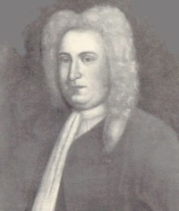

by
Stefan Bielinski
Rip Van Dam was born about 1660. He was the son of Beverwyck/Albany carpenter/trader Claes Ripse and his wife, Maria Bords. As an adolescent, he worked for Robert Story - a Manhattan merchant doing business in Albany. Then young Rip was sent to New York for more advanced business training.
He soon entered business on his own. In 1684, he married Sara Vanderspiegle of New York City. The marriage produced at least nine children whose baptisms were noted in the family bible.
He held a number of civic positions in New York City. He was elected to the provincial Assembly in 1699. In 1702, he was appointed to the governor's Council of advisors. He served on the Council for more than thirty years and often represented the governor - making his annual trip to Albany to renew the alliance with the Iroquois. He was acting governor of the province until the arrival of governor William Cosby in 1731! He presided over the Zenger trial in 1735.
Rip Van Dam filed a will in June 1746 that included an extensive inventory of his estate. One of his New York houses went to his grandson, Albany native Hendrick Hansen. He died in New York on June 10, 1749.

notes
 Sources: The life of Rip Van Dam is CAP biography number 6353. This profile is derived chiefly from family and community-based resources. Additional biographical material on him appears online.
Sources: The life of Rip Van Dam is CAP biography number 6353. This profile is derived chiefly from family and community-based resources. Additional biographical material on him appears online.
Photograph of a portrait of Van Dam by an unknown artist (perhaps Evert Duyckinck, III) done about 1720. Collection of the New-York Historical Society.
first posted: 05/30/03